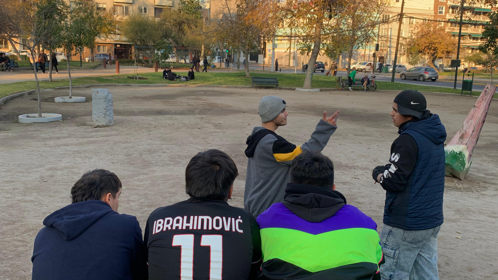

barrio bustamente y los papus
26 de junio 2025El martes me torcí el tobillo derecho. Estaba entrenando en la noche y me dio un wacaplóm, producto del frío, tener el pie helado, y hacer movimientos bruscos mientras estoy corriendo. Con la extraña suerte que corro, a los 5 minutos estaba bien, o eso pensé, que luego de doblarme todo el pie podía caminar e incluso correr, sólo que con leves quejidos. La mañana siguiente no podía ni pisar, wn. Más encima me tocaba pega ese día.
Torcedura de tobillo derecho. Oh no... ¿Y ahora?
Mini vacaciones, desempleado simulator. Es hora de dejar la pala un rato y ver cómo viven esos especímenes con palafobia.
Este es Anthony Bourdain. Quizá tú lo conozcas. Yo no, al menos no profundamente todavía. Una amiga es fanática de él, y a través de ella es que vi cosas que él ha dicho, hecho, y me parece interesante el hombrecito. Entre algunas de las cosas que he leído del hombrecito genial:
“Travel changes you. As you move through this life and this world you change things slightly, you leave marks behind, however small. And in return, life—and travel—leaves marks on you.”Entonces ya. Tengo que salir. Aunque me duela caminar.
La micro
Entro en la micro, una señora al frente
Micrero apurado, de mente ausente
Extiendo mi enojada descripción para llamarlo insolente.
La dama de tercera edad paga, y el indolente que no espera subidas. Me llama que me monte, y en mi primer pie dentro, la micro enfurece con su rugida.
(ctm, el pie)
En eso que subo, por apuros de nada, la dama casi que cae en bajada. Qué bonita es la acogida de Señor Micrero.
Me siento en un asiento, una pareja atrás mío en un momento intenso, de esos que juntan una cama con un incienso. De pierna subida, rostros juntos, buena la vida y poca la vergüenza.
Unos susurros inaudibles, sonrisas de cerca, ¡pero cuánto calor hacía en la pieza!
Uno en humildad sentadito.
« Sí, así son, hijo. »
El metro
Me siento un mini viejo
Observo la gente, como quien agraciado con tiempo y desertado del apuro y responsabilidades.
Algunos leyendo un libro, los otros ausentes y los otros en celulares.
Uno que entra apurado al tren, se sienta en el suelo y
observa sus notas, introducción álgebra, qué dedicado ese caballero.
En medio de un joven y una dama, se sienta un ochentero.
Apretujado en el asiento y de rostro sincero, amable a la vista y de cordial atuendo.
Desde el otro lado le saludo, una sonrisa de mutuo acuerdo, qué linda la vida y qué lindos los abuelos.
« Nos vemos, caballero, cuídese igual. »
lessi llega a Parque Bustamante
No terminé en Coquimbo. Nunca solía salir, por un miedo de algo que no existía.
Fui vilmente engañado por las serpientes que sisean, los miedos que inquilinan lo recóndito, y la fatiga del alma. Tontos. Tontos todos. Voy a buscar cada sombra que me atosiga la vida, voy a alumbrarlas, y desaparecerán frente a mis ojos. Me han hecho escapar la juventud y ahora yo las dejaré sin residencia.
Sin embargo, me extraña. ¿Cómo permití tanto? Temí tales glaciares y vi tallos venenosos deteniéndome como sobre mis pies un gran enjambre. No preví la pérdida de lo que nunca alcancé a vivir, porque por ausencia de un digno sufragio, ni un inicio tuve para partir.
La caminata

Me siento un mini viejo
Salgo del metro y el aire me recibe distinto
¡No he visto tantos jóvenes juntos en mi vida! Había tanta juventud que por poco me sentía parte de ellos. Universitarios conversando, una pareja en la que una chica conversaba de su última clase de Física. De no estarme equivocando, pues mi memoria es frágil y no pude anotar su conversación, hablaba de la relatividad y cómo la naturaleza de lo que estaba estudiando es bastante contraintuitiva. Hablaba de la luz, de la gravedad, de los agujeros negros, e hizo una densa explicación en como los 3 minutos que estuvo atrás de mí, mientras que éramos como 20 caminando en la misma acera.
Me quedé caminando por el mismo lugar que iban los demás, despreocupado de planes. Sólo quería caminar. Terminé sentándome al frente de...
Y me fumé un cigarro. Lugar apropiado.
Los papus
Unos jóvenes caballeros luchando con palabras. Me coloqué al lado de ellos, les susurré un saludo, y me quedé escuchando en compañía. Un waltz informal, una batalla de gallos. Se me había olvidado el ambiente, pues la última vez que fui espectador o participante de estos eventos fue hace unos 5 años. Al instante haces conexión con la presión que se siente en el aire por inventarse un qué contestar, qué palabra soltar, cómo se puede la otra persona adaptar a tu respuesta, y ese tácito temor a equivocarse. Bastante bonito y urbano.
- ¿Quieres pasar? ¿Has rapeado antes?Dónde chucha me metí
- No, no he rapeado antes. Pero ya, cómo no.Sutil mentira de conveniencia personal. Prefería que tuvieran nula expectativa sobre mí, a que se me tomara en cuenta la experiencia de una vez hace años. Empezó la cuestión y la verdad me divertí bastante, y de paso me terminaron dando la victoria en la primera batalla - gesto de amabilidad. Fue bastante divertido. Uno de ellos me dijo que tenía talento para batallar y debía inscribirme... Le dije que gracias pero no pedí más información. Solté alguna rima ordinaaaria, pero me la voy a reservar.
Almuerzo
Le vi la raja al caballero de azul
Luego de 3 batallas de rap, me dio hambre y le dije a los papus que me iba a almorzar algo. Crucé la carretera y me fui al primer restaurant que vi. Tenía dos opciones: en la mesa donde me senté, más cercana a los autos o más a la derecha, cerca del restaurant. ¿Dónde preferirías sentarte? Yo sentí un vértigo al poco tiempo, como si un Destino Final me estuviera respirando en la nuca, y una camioneta iba a aplastarme. Quería cambiarme de mesa, pero sentí que iba a perder aura si me paraba así que no me terminé cambiando. Leí el menú, le di como 6 vueltas, y al final me fui por...
Una empanada y un café. De pollo la empanada, americano el café.
La empanada de pollo sabía... a pollo. Tenía una distribución generosa de aire/pollo, la cual se mostraba a favor de mis intereses alimenticios, por lo que no tuve nada de qué quejarme. En materias cafeínicas, es el café más cafeoso que he probado. Es el sabor que uno imaginaría cuando piensa en un café. Es el estándar, todo un clásico, un maestro entre la multitud. Echarle endulzante lo sentía como ver una película de culto con doblaje, así que no le coloqué más que sólo mi boca. Y tenías razón con lo de que te provoca un dulce luego de un café sin azúcar, oye. Pude haberme comprado un dulcito para arreglar ese desbalance gustativo que me afligía, pero lo omití. Me mantuve el aliento de un cigarro, un café, y una empanada. Perfecto para hablarle a alguien en una distancia de menos de un metro.
Pero de pronto, el caballero de al frente se levantaba - le dolía el pie derecho, parece que se le había dormido. Su señora le aconsejó caminar un rato para que se le pasara. En el proceso del levantamiento de su cuerpo, en el frío divorcio del poto y la silla, su pantalón se rehusó a seguir las intenciones de su portador, mártir de rebeldía y apegos. En la disputa breve entre siervo y amo, la física emblandece el sombrío, haciendo entre pantalón, cuerpo, y silla, una propuesta que no podrían rechazar: la exhibición de raja. Un claro color leche blanco de piel invadían mis ojos. Clara era aquella línea divisoria que hace distinguir ambas nalgas, de modesto volumen esférico. Curiosa la vista, y no me causó molestia alguna. Me permitió tener un recuerdo notable de mi corta estadía en Pizza Tango Providencia, lugar de pizzas, milanesas, medialunas, y pastas.
Jóvenes en skate
Termino de almorzar, me devuelvo al parque y continúo con el resto del camino. Veo un parque de skate, me fui para allá. Me quedé unos minutos viendo a la gente, me entretengo con eso. Estaban pasando muchas cosas, oye. Había un chisme de parejas a mi izquierda, a la derecha me habían ofrecido marihuana, y al frente por lo menos todo seguía normal. Decidí quedarme viendo al frente, un frente amplio. Luego me puse a caminar una media hora sin rumbo alguno, y me fui a casita.
¿Qué aprendí en esta salida?
- Es bonito pasear solo
- Es imposible perderse en metro
- Los adultos que detestan el comunismo pueden presentar como argumento que, durante el gobierno de Salvador Allende, existían largas filas para conseguir alimentos y productos básicos, y esto era el panorama común en el Gran Santiago. De esto, parte la idea de que comunismo es igual a filas por raciones de comida, lo que equivale a pobreza, lo que equivale a Cuba y Venezuela.
¿Pero por qué? ¿Por qué?
La comida no puede desaparecer así como así, para luego post golpe de estado volver al instante... No es posible. Pero para los que están a favor de la derecha del país, lo es, y pueden morir defendiendo que en el comunismo se pasa hambre, utilizando como ejemplo la escasez de comida y productos que sufrieron familias en el gobierno de Salvador Allende. Luego de investigar un poco, en este periodo la derecha se suele ignorar el boicot empresarial que atacó el país, plan impulsado por la derecha (sorpresa), que fue uno de los factores que castigaron a familias chilenas en esos periodos. Empresarios y transportistas decidieron no vender ni enviar, para así provocar la escasez y presionar el renuncio de Allende.
Las JAP, Juntas de Abastecimiento y Control de Precios, fueron necesarias para resolver el problema artificial del abastecimiento, ocasionado por el acaparemiento no de los pequeños comerciantes ni intermediarios (al menos originalmente), sino por las grandes distribuidoras del país.
Entre octubre y noviembre de 1972, los gremios patronales de la industria, el transporte y el comercio, realizaron una paralización casi total de la economía nacional. Los camioneros dejaron de trasladar las mercancías y los informantes se negaron a venderlas. Lo que antes era un inconveniente real, pero en vía de administrarse, pasó a un desabastecimiento todavía mayor. Esta paralización fue parte de un plan desestabilizador, impulsado por la derecha chilena y la CIA para derrocar el gobierno socialista de Allende.
Aún así, en ese tiempo, se había logrado luchar contra este boicot, llegando a superar la mayoría de obstáculos impuestos por el mismo. En ello, también se consiguió una conciencia de clase, donde las mujeres tomaban mayor voz y presencia en lo que estaba sucediendo realmente en el país, masificando una organización para combatir este acaparamiento artificial de los productos. En ese entonces, el 75% de la fuerza de trabajo chilena era masculina, y en ese tiempo la mujer era limitada más al ámbito doméstico y familiar, y justo fue en 1970 que la mujer común (y no sólo la élite) había empezado a tomar espacio en el asunto político, en el que el voto femenino y la organización de movimientos sociales empezó a luchar por una justa paridad en la sociedad. No te voy a citar el estudio entero que estoy leyendo, pero entre algunas cosas que me llamaron la atención:
« Ya no estamos pasivamente en la casa esperando que nos traigan las cosas. Estamos luchando, ya no estamos en la casa discutiendo con el marido: “Que me das poca plata, que me traes pocas cosas, que la plata no me alcanza”. Ahora no, una le hace pelea a la cosa y se da cuenta del momento actual que estamos viviendo, estamos más consientes, se ha despertado una conciencia más clara en la mujer. »« Hemos logrado superar en gran parte las dificultades de abastecimiento creadas por el paro. Pero lo más importante es que demostramos y nos demostramos a nosotros mismos que unidos podemos hacer muchas cosas. La prueba está en que en esta Unidad Vecinal no faltó ningún día el abastecimiento de los productos fundamentales para cada hogar. »
Con esto se puede llegar a saber que a la derecha, desde hace tiempo, no están ni ahí con cuidar el país, y hasta retendrían la comida de las familias chilenas, e incluso, hasta ahora, venderían el país a extranjeros, con tal de unos votos a su favor y conseguir su posición en el poder.
La lucha por “el pan” y la defensa del “gobierno popular”: las Juntas de Abastecimiento y Control de Precios en la Vía chilena al socialismoYa, esto viene porque había ido a comprar papas fritas donde una vecina. Nosotros conversamos mucho, siempre. Le pregunté por quién había votado. Al decirme que no había votado, le dije que Jara había ganado las primarias. Me dijo que estaba mal, porque ella era comunista, que no podíamos tener otro de izquierda, y así. Luego de hablar un rato, me dice que en el gobierno de Allende muchos estaban pasando hambre porque la comida se racionaba, lo cual significa comunismo, y que en el golpe de estado se arreglaron todos esos problemas, volvió a aparecer la comida, y todo eso. Bueno, en lo personal no cachaba ni una al respecto porque todavía no había investigado sobre este tema de la comida en el gobierno de Allende. Le dije que por algo habrá tenido que ser. Y VISTE QUE POR ALGO SÍ HABÍA SIDO.
El comunismo es cuando tienes dos vacas y la Central de Inteligencia Americana se mete con tus vacas
Actualización 5 de julio. Hoy fui a comprar papas y un completo. Le dije lo que encontré de las JAP y el boicot. Bueno, entre charla y charla, noto es más que nada un sentimiento anti-comunista, sea favorable o no la persona en cuestión... Anti-comunismo... Cuando no se ha tenido un gobierno comunista en Chile...
- ¿Pero no fue ahí que desaparecieron como 3000 personas?
- Sí, pero no estaba yo
aaaaaa ctm me caí de raja noooooo noooooooooooo
Antes de que se me olvide
Le tengo mucho cariño a este poema. Te había dicho que me gustaban los poemas de Benedetti, y no llegué a compartirte uno.
Táctica y EstrategiaMario Benedetti
Mi táctica es
mirarte
aprender como sos
quererte como sos
mi táctica es
hablarte
y escucharte
construir con palabras
un puente indestructible
mi táctica es
quedarme en tu recuerdo
no sé cómo ni sé
con qué pretexto
pero quedarme en vos
mi táctica es
ser franco
y saber que sos franca
y que no nos vendamos
simulacros
para que entre los dos
no haya telón
ni abismos
mi estrategio es
en cambio
más profunda y más
simple
mi estrategía es
que un día cualquiera
no sé cómo ni sé
con qué pretexto
por fin me necesites
Aclaratoria
De ser que me haya equivocado en algo hablando sobre ese problema de la comida y productos que hubo en el gobierno de Allende, pido disculpas. Ando aprendiendo y por tanto no cacho mucho, todavía, naturalmente. Pero creo que no hay mejor persona para hablar sobre el tema que una futura profe de Historia como tú.
También tenía la opción de pasarle a ChatGPT lo que te he escrito sobre el tema para verificar la información (o alguna otra IA), pero creo que preferiría la muerte a que leas algo mío, creyendo que es de mis propias manos para ti, pero que en realidad haya sido influenciado por un modelo de lenguaje, unos beepboopbeepboop. La muerte es más honorable, en todo caso
En conclusión
Muchas gracias, Dani. Espero que te haya gustado. Ah, y ayer (3 julio 2025) aprendí una palabra nueva, que me la había dicho Papuchi: anterógrada, como memoria anterógrada. Es la capacidad de recordar/evaluar información que has vivido/aprendido recién. Amnesia anterógrada sería lo contrario, una dificultad/incapacidad de retener información nueva. Nunca la había escuchado antes...
Cuídate.